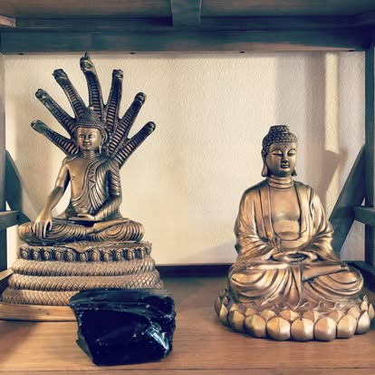
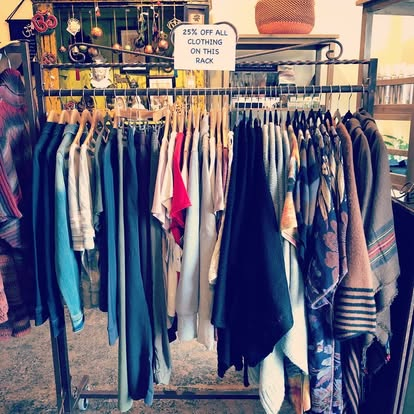
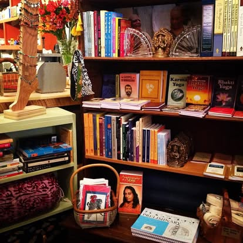

More Than a Gift Shop
Instant Karma is one of Cloudcroft’s more distinctive hybrid businesses: part boutique, part yoga and Ayurveda studio, part wellness-oriented gathering space. It is not a standard gift shop, and it is not just a yoga studio. At 302 Burro Avenue, retail, yoga, Ayurvedic counseling, and a chai bar all share the same address.
Owner Alex Carilli opened the Burro Avenue yoga studio in 2005. It gradually became the boutique with Eastern flair seen today — a business with real continuity and a distinctive evolution from studio to broader lifestyle space. Alex serves as owner, yoga teacher, Ayurvedic health counselor, Club Veg coordinator, and buyer.
Local reporting and the official site suggest a place where the experience matters as much as the products. The yoga studio features heated wood floors and props assembled over years of teaching. The result is a shop where people may browse, pause, and participate rather than simply buy and leave.

Inside Instant Karma


What Makes It Different
Not a Standard Gift Shop
Instant Karma’s identity is rooted in wellness and Eastern traditions more than in standard mountain-town gift merchandise. It likely appeals to shoppers looking for yoga, chai, wellness events, boutique goods, and a slower, more intentional browsing experience.
Nearly Two Decades on Burro Ave
Owner Alex Carilli opened the yoga studio in 2005, and it gradually evolved into the boutique with Eastern flair seen today. That continuity makes this a rare long-running independent business on one of Cloudcroft’s most walkable blocks.
Chai Bar & Community Space
Cloudcroft Reader reported that Instant Karma added an Afternoon Chai Bar, reinforcing the gathering-space side of the business. This is a place where people browse, pause, and participate rather than simply buy and leave.
Visit Instant Karma
Everything you need to know before you go.
Location
302 Burro Ave, Cloudcroft, NM 88317. On the main commercial block — walkable from anywhere in the village.
Hours
Mon–Sun, 12:00 PM – 5:00 PM (per official contact page). Hours may vary by yoga or event schedule — check directly before visiting.
Contact
Phone: 575-682-2651
Email: alex@getinstantkarma.com
Web: getinstantkarma.com
Good to Know
This is a boutique and wellness space, not a standard retail store. Yoga classes, Ayurvedic counseling, and chai bar availability may run on separate schedules. The online shop is available at instant-karma.square.site.
Boutique, Yoga, and Chai on Burro Avenue
Instant Karma is where Eastern-inspired retail, yoga, Ayurvedic wellness, and a chai bar come together on Cloudcroft’s most walkable block. A one-of-a-kind stop since 2005.